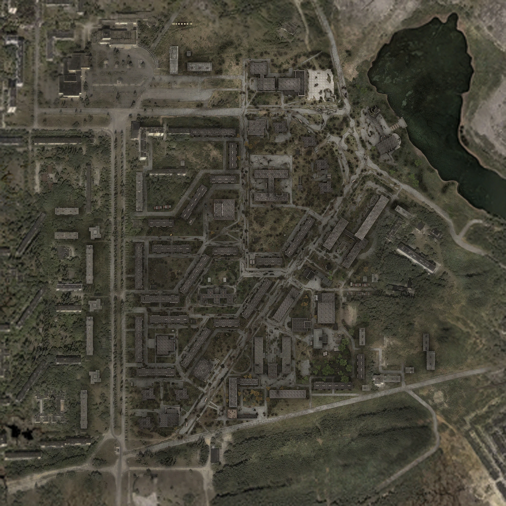

Припять — город на севере Украины, основанный 4 февраля 1970 года и покинутый жителями через несколько дней после аварии на Чернобыльской АЭС 26 апреля 1986 года. Встречается в «S.T.A.L.K.E.R.: Тень Чернобыля» и «S.T.A.L.K.E.R.: Зов Припяти».).
музыка
день
ночь
Карта
Прачечная — старое двухэтажное здание химчистки на окраине Припяти, в котором обосновались военные. Если Дегтярёв полностью соберёт отряд, и они все успешно доберутся до Припяти, то здесь на короткий срок останутся Вано, лейтенант Соколов и Бродяга. Чуть позже сюда придёт Гарик. На данной базе имеется техник (лейтенант Кириллов), и медик (лейтенант Роговец). Если не улетать из Зоны и остаться («Freeplay»), то их обоих заменит Дядька Яр. Прачечная — первое место в ЗП, где ГГ видит Стрелка. Как когда прачечная находится под контролем военных, так и после их ухода действует правило, по которому на её территории запрещено ходить с оружием в руках.
Одно из зданий в Припяти. В самом гастрономе почти ничего интересного, но туда придётся сходить по сюжету. Кроме того, там же можно переждать выброс.
Бывший госпиталь атомной станции, находящийся в Припяти. Это место стало одним из лагерей «Монолита»: именно здесь обосновался Проповедник со своим отрядом. Эту точку придётся захватить вместе с группой Тарасова практически сразу после прибытия Дегтярёва в Припять.
Заброшенный детский сад, находящийся в Припяти. Внутри поселились полтергейсты, а из-за собранной монолитовцами из мусора антенны вокруг образовался высокий уровень пси-излучения. Её можно взорвать парой гранат, выстрелом из гранатомёта или просто расстрелять из обычного стрелкового оружия, чего нельзя повторить с аналогичной антенной в книжном магазине.
Комбинат бытового обслуживания «Юбилейный», находится в Припяти. Это место кишит зомбированными и «Монолитом», а на крыше можно найти скопление аномалий типа «электра». Здесь присутствует труп наёмника Барчука, КПК которого купит Сыч. Кроме того, именно тут находится вход в лабораторию X8. Поле «электр» на крыше состоит из 11 сильных «электр» (находятся всегда на одних местах) и 7–8 средних «электр» (3 на постоянных местах, 4–5 на случайных). При первом посещении здесь гарантирован артефакт «Снежинка», а потом будет появляться до трёх электрических артефактов за раз. Артефакты могут перекочевать с крыши на другие этажи. С этим местом связан сюжетный квест по поиску лаборатории X8. Чтобы попасть в неё, надо забраться на последний этаж, включить генератор и спуститься на лифте.
Раньше это сооружение было культурным местом города, здесь часто встречались люди. Они гуляли и ходили в кино, смотрели новинки мировой киноиндустрии. Теперь это заброшенное здание, бойцы группировки «Монолит» основали здесь лагерь. Именно это место было выбрано военными, как точка эвакуации, известная под кодом «Б-28». Кинотеатр «Прометей» в своё время являлся посадочной площадкой вертолётов с ликвидаторами и военными после аварии на ЧАЭС в 1986 году. Около кинотеатра расположена площадь с памятником в центре, который является некоторым символом города. Сам кинотеатр представляет собой большое трёхэтажное здание с двумя входами.
Магазин «Книги» — одно из ключевых мест Припяти, книжный магазин на окраине города. Это место разграбили мародёры ещё в конце 80-х годов, а ближе к событиям игры бойцы «Монолита» основали здесь лагерь. В магазине располагается антенна в куче мусора, с помощью которой кто-то связывается с фанатиками, и они воспринимают это как Божье откровение. Игроку придётся посетить магазин по мере прохождения квеста «Скопление „Монолита“», когда ему пришлют подкрепление для штурма лагеря фанатиков.
Магазин «Берёзка» — старый продуктовый магазин в Припяти (ЗП). Расположен между прачечной и госпиталем.
Представляет собой два пятиэтажных корпуса, соединённых переходом. Именно в этом месте происходит встреча Шакала с Сербиным.
Речной порт на востоке Припяти, до катастрофы отсюда регулярно ходили суда на подводных крыльях типа «Ракета», «Комета», «Метеор» до Киева и Мозыря. На первый взгляд место пустынное и неприметное, но наметанный глаз сразу увидит несколько снайперских позиций на крыше здания и охрану, патрулирующую его периметр. Это место является охраняемым лагерем группировки «Монолит». Если подняться на второй этаж, то можно увидеть монолитовца, который молится. Он не обратит на ГГ никакого внимания, но если в него выстрелить, то есть небольшой шанс, что он будет стрелять в ответ. Убив его и взяв КПК, Дегтярёв получит координаты трёх тайников. В них будут лежать армейские аптечки и аккумуляторы для Гаусс-пушки. Это место является точкой появления монолитовцев и иногда зомбированных.
Старый КБО находится в Припяти. Здание заброшено, на первом этаже образовались «электры», на втором поселился бюрер. Если здесь всё тщательно осмотреть, то можно найти немало полезных предметов, например, тайник с гранатами ВОГ-25 и ОГ-7В к РПГ-7, аккумуляторы и инструменты для калибровки. Поле «электр» состоит из 11 сильных и 2 средних «электр» (своих мест после выброса не меняют). При первом посещении здесь заскриптован артефакт «Пустышка», а в дальнейшем тут будет появляться до двух электрических артефактов за раз.
Старый универмаг, расположенный в Припяти. Здание заброшено, внутри поселились тушканы. Сам универмаг почти не представляет интереса, интересен лишь его подвал. В подвале образовались 10 сильных аномалий «кисель» и «комета», и там появляются химические артефакты. При первом посещении там заскриптован артефакт «Пузырь», а после будет генерироваться до двух химических артефактов за раз.
Старая школа. Часть здания обвалилась, а в месте обвала образовались грави-аномалии. Внутри есть множество кабинетов, музыкальный зал. Территорию школы облюбовали зомбированные и снорки. Кроме того, в школьном дворе часто можно увидеть тушканов и собак. Рядом со школой находится что-то вроде оранжереи или теплицы.
Аномалия возникла на месте спортивной площадки (о чём говорят столбы с баскетбольными щитами) и интересна, в первую очередь, тем, что в этом месте находятся три «кометы», которые перемещаются над землёй и в земле и не регистрируются детекторами. Помимо них здесь присутствуют 14 сильных «жарок». Здесь генерируется до двух огненных артефактов одновременно, а при первом посещении здесь заскриптован артефакт «Пламя» (зависит от версии игры). Аномалии не меняют своего положения после вброса. Неподалёку от аномалии можно часто встретить Пси-собак и зомбированных сталкеров. Существуют и другие похожие аномалии: «котёл» и «цирк» на Затоне и «разлом» в Тёмной долине и на Болотах.
Огромное растение, произрастающее из земли и уцепившееся за две близлежащие девятиэтажки и находящиеся к северу от школы. Её видно издалека. У подножия, в углублении, располагается пять сильных «Газировок», порождающие химические артефакты. При первом посещении тут заскриптован артефакт «Светляк», находящийся либо в комнате с тайником, либо на земле. В дальнейшем аномалия будет генерировать до двух химических артефактов за раз. Помимо самих «газировок» внизу, наверху подстерегает не меньшая опасность в виде редкой разновидности «кометы», которая наносит очень сильный химический урон и курсирует по замкнутой траектории. Уклониться от неё получится только если перейти на соседнюю ветку «лозы», куда аномалия не будет стремиться.
Почти во всех частях города среди фоновой музыки можно услышать голос, говорящий что-то неразборчивое. Ясно то, что это не может быть предупреждением военных: военные располагаются в прачечной, а в ней нет каких-либо рупоров. Примерно этот же голос звучит в промежутках между репликами «Монолита» в ТЧ, когда игрок на пути к нему. Также в фоновой музыке постоянно слышны стандартные городские звуки: скрип тормозов автобуса, сигнал автомобиля, неразборчивые разговоры, смех и даже неразборчивая речь: «От Центрального Комитета Коммунистической Партии Советского Союза, Президиума Верховного Совета СССР, Совета Министров СССР...». Это обрывки сообщения о смерти Леонида Ильича Брежнева, которые звучали в 1982 по всем радиоканалам страны. В Припяти можно неплохо подзаработать, собирая оружие, чиня его бесплатно у Кириллова или дядьки Яра, и вместе с артефактами сбывая при следующем же посещении торговца. В режиме «freeplay» можно продавать оружие находящимся в прачечной сталкерам. В некоторых местах города можно встретить блуждающих наёмников. Все они настроены враждебно по отношению к ГГ и нейтральны к одиночкам. Это те, кто выжил после квеста «Один выстрел». А если не был убит Шакал, наёмники будут разгуливать по Припяти повсеместно. С помощью команды для обзора карты demo_record, можно найти здание с радиационным знаком опасности. В этом здании до аварии находился горисполком Припяти. После аварии в здании располагалось специализированное предприятие по обращению с радиоактивными отходами и дезактивации «Комплекс». В реальности статуи «Прометей» в городе уже нет. Она была вывезена из Припяти и установлена на пром. площадке ЧАЭС, чтобы защитить от мародёров (бронза, из которой сделана статуя, является достаточно дорогим металлом, что даёт причины выкрасть статую (или её часть) и продать как цветной металл).

@все права защищены 2025г